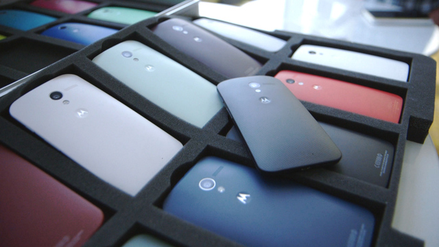

The Moto X Is Functional, Fun and Fashion-Forward
The Moto X is a solid, high-quality device with a few new and interesting features, thanks to Google.
One of the best and most unique features, from my perspective, is that it's made in the USA. The return of some wireless device manufacturing is a good sign. Perhaps if the Moto X is a hit, it will entice other phone makers to manufacture in the U.S., spurring jobs and growth.
Moto X, Motorola's first new handset since being acquired by Google, is a true tech-fashion-forward move. In the past, a new handset offered by Motorola would get me as excited as watching paint dry, but something is different this time around.
The Motorola Droids sold by Verizon Wireless are fine, but they are available only for one network, which seriously limits their ability to compete.
Android runs on smartphones and tablets from many manufacturers. The best and the worst can have Android. That makes it tough to buy the best quality based on the Android brand. So users shouldn't pay attention to the Android brand when considering quality. Instead they should pay attention to the manufacturer and the device itself. The Moto X is a strong entry into the Google Android ecosystem. It currently is available from AT&T, Verizon, Sprint, T-Mobile and U.S. Cellular. More carriers will likely join this group.